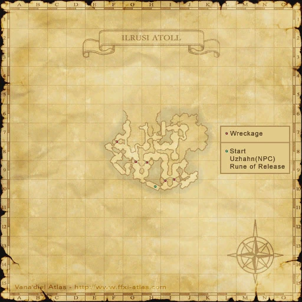

Level 75 reference · Zenith rules
|
Enemies
| Monster | Level | Strengths | Weaknesses | Spawns |
Notes |
|---|---|---|---|---|---|
|
|
| |||
|
76-78 |
|
10 |
A, T(S), M | ||
|
HP = Detects Low HP; M = Detects Magic; Sc = Follows by Scent; T(S) = True-sight; T(H) = True-hearing JA = Detects job abilities; WS = Detects weaponskills; Z(D) = Asleep in Daytime; Z(N) = Asleep at Nighttime | |||||
Drops
|
|
|
Walkthrough
Use a Demolition Automaton to destroy the 5 shipwrecks.
- You start out on a ship at (H-10) in front of an NPC Uzhahn.
- One person (Preferably a mage type job) talks to Uzhahn and that person is assigned a Demolition Automaton.
- Only one automaton can be issued at a time, and it is linked to the person who talked to Uzhahn.
- The automaton will not defend itself or its master, nor can you command it like a Puppetmaster would.
- It will follow its master around until it finds its intended target.
- You can cure the automaton. It has a substantial amount of HP, and can take a number of hits.
- You can also cast Protect, Shell, and Haste on the automaton.
- Should your automaton become severely damaged, it is possible to take it back to the starting point for repairs from Uzhahn.
- If the automaton takes any damage during the repair process, it will be cancelled.
- Your party should be well equiped to handle imps. They will respawn within five minutes so be prepared to handle more than one at a time. Imps have approximately 2000-2500 HP each, and do standard imp moves. They con Even Match to Tough in an uncapped run.
- Most imps can be avoided. There are tunnels through the walls in some places that make it easier to avoid the imps. If you see an imp blocking your path, look for one of these tunnels to go around it.
- Imps will aggro the automaton and other pets such as wyverns.
- Scattered around the area are 5 barriers made of wood planks and debris. These are the shipwrecks that your automaton is designed to destroy.
- All the shipwrecks are located in the southern part of the map. The northern area of the map is completely empty.
- The shipwrecks are not targetable, and the automaton is the only thing that is able to directly attack it. Just have whoever is leading it move close to the target wall and the automaton will automatically engage it.
- It is possible to use AoE weapon skills, ~ga magic and Blue Mage breath spells to deal half damage to the wreckage and speed up the process.
- Once the automaton uses the weaponskill Slapstick, a Carrion Crab will spawn.
- They don't have a lot of HP (less than 2000) and are easily taken care of. Crab will use all standard crab attacks. Crabs do not give XP when defeated.
- The crab cannot be distracted from the automaton and will keep attacking it until one of them is dead.
- If the Automaton uses Slapstick to defeat the Wreckage, no crab will spawn. Conversely, if you defeat the crab before the Automaton is finished with the Wreckage, and the Automaton uses Slapstick again, a second crab will spawn.
- If wreckage falls it is possible to Bind the crab and move the automaton away from it.
- If your automaton is destroyed or you die and it disappears, Uzhahn will give you another.
- After you destroy all the walls talk to Uzhahn to receive your score and spawn the Rune of Release.
- The Assault Points reward may be based on the score Uzhahn gives you at the end. A score of 10 (one repair, no replacements) was worth 1000 points each for a party of 3.
- Presumably losing an automaton and getting a replacement will result in a lower score.
Hint
To clear within 20-25 minutes, all party members need poison potions, echo drops, and a leveled dagger skill for Cyclone (i.e. SAM/NIN is very good, although NIN/SAM, THF/NIN, and WAR/NIN will work), or an staff skill (i.e. PLD/SAM or DRG/SAM) for Earth Crusher. Both AOE weaponskills are magical, therefore they cannot miss. Position all melee with back to the shipwreck and pull an Imp to that shipwreck. If possible, use Cyclone on the Imp - it will do damage to the imp and approximately 50-125 damage to the shipwreck if the imp is positioned correctly. Poison Potions are required due to the fact Imps will use Sleepga a lot (it pulled it off at least 6 times). When imps in that area are dead, send in the automation and the healer should rest MP. (Never send automation in if you're still fighting imps unless time is short.) When crab pops melees can cyclone the crab (it will always hit the shipwreck). You will need at least 3 melee and a healer (with healer controlling the automation). There should 1 to 2 imps pops around each shipwreck. When clearing shipwrecks, start with the one furthest east, then work your way west. The dangerous part is going back to the NPC when all shipwrecks are down, as the Imps will have repopped and got longer than normal line of sight aggro than the average Imp (also, you are likely moving a long distance back). Imps can be gravitied and binded, or put down with lullaby at this point - your main goal is to get the automation and the person that controls the automation back to the NPC alive.
Notes
- There seems to be a bug, the crabs will also aggro NPC pets you may have with you, such as wyverns.
- Tips from Minimusdecimus: This is basically Excavation Duty but only an NPC can attack the walls. 'The Wreckage' is untargettable, but still follows general emnity mechanics, which makes SMN a good choice for this mission. A SMN can pull hate by curing the Puppet causing Avatar to "bodyguard" and attack, significantly increasing kill time. With the Puppet and 2 Fenrirs attacking the Wreckages, along with the rare AOE WS from targetting the spawned crabs, the mission can be done pretty swiftly. ~ minimusdecimus
Map


Adapted from Eden Wiki: Assault Mission - Demolition Duty · Contributors and history · CC BY-SA 4.0. Revision 47291. Layout, links and optional background text adapted for Zenith.